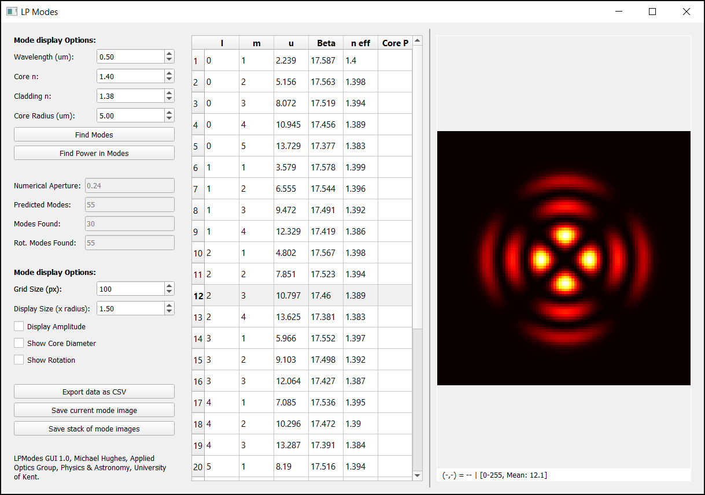

A few years back I uploaded a collection of Matlab scripts to MathWorks that allowed for solving LP modes for step-index fibres. For those who aren't overly familiar with this, it essentially involves solving Maxwell's equations to tell you the allowed electric field distributions within the fibre. Each allowed distribution is called a ‘mode’, with the number of available modes ranging from 1 for small-diameter ‘single mode' fibres to many thousands in larger-diameter ‘multimode' fibres. If we couple coherent light into a fibre, the pattern of light exiting the other end is some coherent combination of these modes, and usually ends up looking like a random speckle pattern whenever the fibre supports more than a few modes.
While solving the general problem is quite hard, for reasonably low numerical aperture fibres there is a well-known simplification that reduces the problem to finding solutions of a single ‘characteristic’ equation. This is all very well-known; the Matlab code doesn't do anything novel, but it provided a convenient implementation (or at least convenient for what I wanted to do at the time).
While the Matlab code worked well enough, I've long since switched to using Python, and as I had a need to do some modelling that needed LP mode solutions, I decided to port the code. I could have done something quickly (or found someone else's code), but since I was still getting a trickle of monthly downloads for the Matlab code (and over 1,000 in total), I decided to do a proper job and make a public package in the hope that others might find it useful.
So, here it is: LPModes is available on GitHub, https://github.com/MikeHughesKent/lpmodes, or by:
pip install lpmodes
and the documentation is on Read the Docs: https://lpmodes.readthedocs.io/en/latest/.
I think the Python package is actually a lot better than the Matlab original. It includes a GUI and some additional functionality around propagating electric fields along a length of fibre. You can calculate the parameters of each mode, and plot its amplitude and intensity. You can also simulate coupling of arbitrary beams (E-fields), calculating the resulting power in each mode and the total coupled power, and plot the amplitude, phase and intensity distributions at entry or after propagation of any distance along the fibre.
It would be interesting to see if there are more potential users. How many still prefer Matlab for this kind of work?
